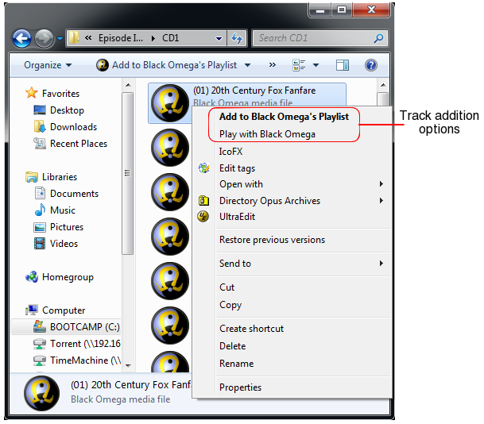

Play And Pause
You start playback by either
- Clicking on the Play/Pause button.
- Pressing the Space key, or the assigned "Play / Pause" key.
- Alternatively, you can start playback from a specific track or album in the playlist by double clicking it.
Playback is paused and resumed in the same way as playback is started, namely by
- Clicking on the Play/Pause button.
- Pressing the Space key, or the assigned "Play / Pause" key.
Previous and Next Tracks
To navigate to start playback of either the previous or next tracks in the playlist
- Click on the Previous Track or Next Track buttons.
- Pressing "Ctrl ⇠" Left Cursor (Windows), "Command(⌘) ⇠"(MacOS), or the assigned "Previous Track" key.
- Pressing "Ctrl ⇢" Right Cursor (Windows), "Command(⌘) ⇢"(MacOS), or the assigned "Next Track" key.

Seek
To seek the playback position to a specific time position in the current track click on the Seek slider and still holding
the mouse button down slide the bar to the desired position. Release the mouse button to set the position.
Alternatively, you can click on anywhere along the length of the Seek bar and the slider will jump to that position and
still holding the mouse button down slide to the desired position and release.
If you don't want to change the position once you started sliding the Seek slider then, still holding the mouse button down,
slide the cursor of the Seek bar.
The time display will change as you move the slider to show the time position of the Seek slider’s current position.

Volume
The volume level can be adjusted by sliding the Volume control up or down to increase or decrease,respectively, the level.
Alternatively by holding down either of the assigned (Minus - or Plus +) keys you can adjust the volume level down or up, respectively.

Shuffle / Repeat Playback
Toggle the Shuffle option On to playback songs in your list in a random order. Alternatively, toggle the Shuffle option Off to
playback songs in the sequential order they are listed in.
Toggle the Repeat option On to repeat playback of the playlist, from the start, when it has finished playing the last song.
Alternatively toggle the Repeat option Off to complete playback when the last song has finished playing.
Both the Shuffle and Repeat playback options can be accessed from the context menu.
Add Files and Folders
You can append both supported music and playlist files to your playlist using a standard file selection dialog.
- Use the Add Files option to add individual music and playlist files.
- Use the Add Folders option to add all the music files within the selected folder.
When adding multiple files into a playlist Black Omega will group and sort the tracks by album.
The Add Files option can be accessed by
- Clicking the Add Files button at the bottom.
- Press Ctrl(Windows)/Command(⌘)(MacOS) and O keys.
- From the Context Menu.
This will display a standard file selection dialog that will allow you to select one or more music or playlist files.
The Add Folder option can be accessed by
- Clicking the Add Folders button at the bottom.
- Press Ctrl(Windows)/Command(⌘)(MacOS) and F keys.
- From the Context Menu.
This will display a folder selection dialog that will allow you to select the folder whose music contents will be added to the playlist.
Drag and Drop Files
You can drag files and folders from Windows Explorer and drop them into any location within your playlist.
The playlist interface provides a guide to where your tracks will be placed.
The guide is shown by a thick horizontal line between tracks, close to your mouse cursor,
indicates where in the playlist your tracks will be placed.
Moving the cursor the top and bottom playlist edges will scroll it up and down, respectively.
Track Selection
Tracks can be selected by clicking on the track.
- Holding down the Ctrl key while selecting tracks will allow you to select multiple tracks.
- Use the Shift (⇧) key while selecting tracks to select the top and bottom of your selection range.
If you select an album header then it will select all tracks belonging to that album group.
Selected tracks are highlighted in blue.
To select all tracks in the playlist
- Press Ctrl(Windows)/Command(⌘)(MacOS) and A keys.
- From the Context Menu
Drag and Drop Tracks
You can drag and drop your selection to any place in the
playlist to change the position of the selected items within the play list.
The playlist interface provides a guide to where your tracks will be placed.
The guide is shown by a thick horizontal line between tracks, close to your mouse cursor,
indicates where in the playlist your tracks will be placed.
Moving the cursor the top and bottom playlist edges will scroll it up and down, respectively.
Copy, Cut and Paste
You can use the clipboard to move selected tracks around the playlist.
To copy tracks to the clipboard
- Press Ctrl(Windows)/Command(⌘)(MacOS) and C keys.
- From the Context Menu
To cut tracks into the clipboard
- Press Ctrl(Windows)/Command(⌘)(MacOS) and X keys.
- From the Context Menu
Tracks are pasted into the playlist either
- After the last selected track.
- Or at the end of the playlist if no track is selected.
To select Paste
- Press Ctrl(Windows)/Command(⌘)(MacOS) and V keys.
- From the Context Menu
Play from a Specific Track
By double clicking on a track in the playlist it will start playing that track immediately.
The track being played will be shown with a green highlight and appropriate icon.
- A speaker icon is shown when the track is playing.
- A pause icon is shown when it is paused.
Saving Playlist
Black Omega can save your playlist to one of three common playlist formats supported by various players and software. Namely
| File Extension |
Description |
| pls | Generic playlist format |
| m3u | MP3 playlist format |
| m3u8 | MP3 unicode playlist format |
| xspf | XML shareable playlist format |
To save your playlist either
- Save Playlist from Context Menu
- Press Ctrl(Windows)/Command(⌘)(MacOS) and S keys.
This will present you with a save file dialog box. Specify the file name and format type for your new playlist.
General Preferences
When checked on the "Buffer file being played into memory" will buffer the contents of the current file being played into memory.
This can be useful for two reasons: Firstly, it stops the continuous hard drive clicking during playback as the data is loaded as needed.
Secondly, music played across a network can be prone to network congestion, particularly for large HD quality tracks, causing gaps in playback.
So by buffering the track into memory the data is pulled across the network and is buffered locally in memory available for playback.
Audio Preferences
The Audio Preference interface allows you to configure
- Which sound device Black Omega should use.
- The type of speaker configuration you have.
- Stereo playback on Surround Sound systems.
- The associated sound channel outputs for each speaker.
- Test the assigned output for each speaker.
Audio Preferences is located in the Preferences dialog in the Audio tab.
The Sound Device drop-down lists your available sound devices and external DAC hardware.
On Windows the audio API is listed, either ASIO or WasAPI, with the sound device.
Select the Sound Device, from the list, you wish Black Omega to use. Where applicable, you can select wither or not
to take exclusive control of the device during playback via the Exclusive Mode checkbox. Note on MacOS
a device might be listed as "Exclusive Integer Mode" which when selected uses the low level
HAL Integer Mode allowing for bit perfect playback using the DACs native integer format.
Black Omega supports multi-channel speaker configurations such as 7.1 or 5.1 sound cards and AVR amplifiers. Dependent upon the number of
output channels the Audio Preferences allow you to select the speaker configuration that matches the selected Sound Device. Note that for some
devices (e.g. AVR amplifiers via HDMI) require Exclusive Mode to be selected to access all the speakers.
Use the Speaker Configuration drop-down list to select the number of speaker outputs you have and hence
their associated setup. The number of speakers available will also be dependent on the number of output
channels supported by your sound device.
Depending on your chosen Speaker Configuration the associated surround sound speaker configuration will be enabled.
Black Omega can extend your stereo sound stage by playing a stereo track through multiple speakers. The Stereo Configuration group of
options provides control of what speakers to utilise in stereo playback. The Speakers L/R drop-down list allows you to choose which pair(s) of stereo
speakers to play through.
If available, a Center channel can be generated from the Left and Right channels to be played through a dedicated Center speaker.
If available, a Low Frequency Effect (LFE) channel can be generated for playback through a dedicated Subwoofer speaker. Black Omega employs a
FIR low bandpass filter creating a proper LFE channel for your attached Subwoofer.
Under each of the enabled speakers there is a drop-down box with a list of numbers. Each number corresponds to a
specific output channel from your sound device. For each speaker, set the output channel number such that it
physically corresponds to that speaker.
You can test to see if a particular speaker has been assigned to the right output channel. As you move the mouse
pointer over an active speaker icon on the Audio Preference interface a playback button will become visible on top of
the speaker. Left click this and an audio sample stating the name of the speaker will be played through the assigned
channel.
If you move your mouse over the blue person located in the middle of the speakers a playback button will also appear.
Left clicking this will play an appropriate sample through each of the active speakers.
As a speaker's test sample is played you can see which sample is being played by looking at the playback control interface.
As an example, the configuration shown above is for a sound card with a full 7.1 surround-sound setup.
The output channels are mapped to the following speakers
| Output Channel |
Speaker |
| 0 | Front Left |
| 1 | Front Right |
| 2 | Center |
| 3 | Subwoofer (LFE) |
| 4 | Rear Left |
| 5 | Rear Right |
| 6 | Surround Left |
| 7 | Surround Right |
From the example above, where Stereo Configuration has been set to “Front + Surround + Rear” then
- The left channel will be played simultaneously through the Front Left, Surround Left and Rear Left speakers.
- The right channel will be played simultaneously through the Front Right, Surround Right and Rear Right speakers.
In addition, a Center and a LFE channel will be mixed and played back on their respective speakers.
Controls Preferences
Control of playback can be customized such that
- Different keys can be assigned the various playback commands.
- Playback can be controlled using infrared remote controls.
The Controls tab in the preferences window allows you to setup and configure both.
Control Assignment Table
The table, shown in the Controls tab, shows each of the various commands that can be customized. Namely
- Play/Pause.
- Play Previous Track.
- Play Next Track.
- Turn Volume Down.
- Turn Volume Up.
Also the Previous and Next Track commands when assigned to a remote control double as Rewind and Fast Forward when the
remote button is held down.

Assigning a key to a command.
To assign a key to a given command double click the table cell for the given command and press the key (plus modifiers such as Ctrl or Alt) to assign to that command.
Removing an existing key assignment.
To remove an existing assignment double click the table cell for the given command. If more than one assignment has been made for
the command Left and Right arrow buttons are shown allowing you to navigate to the command you wish to remove. Once selected press the "..."
button on the right hand side of the cell to bring up a popup menu and choose Remove.
To remove all assignments for a command choose Clear All from the popup menu.
Remote Control
Apple IR Remote
Playback can be controlled through the Apple Remote control. If your Apple computer has support for the Apple Remote control
then you'll see "Enable control using Apple IR remote". Turn this on to allow playback control via Apple IR remote control.
Note that, unlike WinLIRC remotes, the button assignments for the Apple remote is fixed.
Remote via WinLIRC
Both WinLIRC and LIRC are applications that communicate IR remote signals, received on a computer's IR receiver hardware,
into notification messages that are broadcast on its hosted server. Black Omega can connect to this in order to receive these messages, and in turn be controlled using
any given IR remote.
To enable connection to an WinLIRC server turn "WinLIRC Remote" on. Enter the computer host name or IP address along with the assigned port number (default is 8765)
where the server is hosted. A message will be displayed showing if you've successfully connected or not.
To assign a command to a given remote key proceed exactly as in Assigning a key to a command with the exception
that you press the button on the remote (as opposed to the keyboard).
iTunes Preferences
This functionality has been deprecated as Apple has built a wall around iTunes integration. This functionality might still work with older versions of iTunes.
Black Omega can make use of your iTunes Library to add tracks by
- Album
- Artist
- iTunes Playlist
This can be accessed from
- Context Menu > iTunes Collection.
Select from either the desired Album, Artist or Playlist from appropriate submenus to find and select the set of tracks you wish to append to your playlist.
Black Omega, by default, tries to locate your iTunes Library in your default Music directory.

You can specify the location of one or more iTunes Libraries from the Preferences iTunes tab.
To add a library such that its contents are available click the Add button. On clicking Add you'll be presented with a folder selection dialog.
Select the folder in which your iTunes Library resides. The player will then scan the selected folder for an iTunes Library whose contents will
in turn be made available via the iTunes Collection menu.
To remove a given iTunes Library select it's associated folder location, from the list, and click Remove.
File Associations Preferences (Windows)
The File Associations Settings interface allows you to associate the various music and playlists file formats with
Black Omega such that it is integrated with Windows Explorer.
By assigning a supported file type to Black Omega then from within Windows Explorer you can either
- Append files to the end of the playlist.
- Immediately play a file with the track inserted after the one currently playing.
Both options are available from the context menu of the file. The default behavior for when you double click on the file
is set in the File Association section of the Preferences dialog.
Black Omega also integrates into the Windows Explorer context menu for directories such that it's contents can be
appended to your playlist.

Ticking the checkbox next to the given file extension will associate that file format with Black Omega.
Creating a file association allows integration of Black Omega into Windows Explorer
such that when you right-click on an associated file you can
- Play the file in Black Omega immediately.
- Add the file to Black Omega’s current playlist.
You can select the default action to take when you left double-click on a file to either play the file immediately
or append it to the current playlist.
By ticking the “Associate Black Omega with Directories” adds the ability to append the music contents of a directory
into Black Omega’s playlist from the context menu for the directory from Windows Explorer.